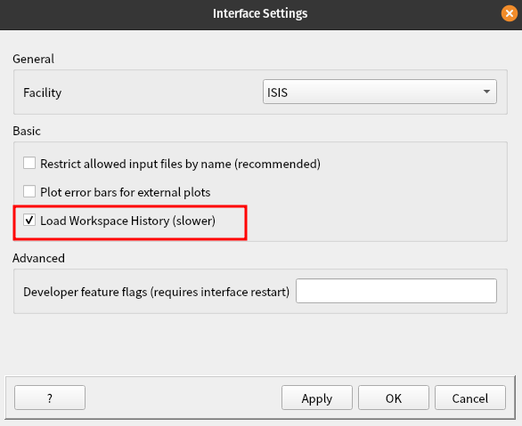
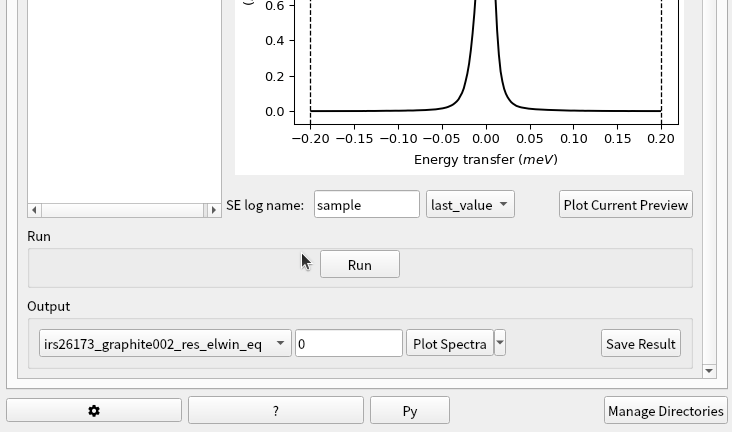
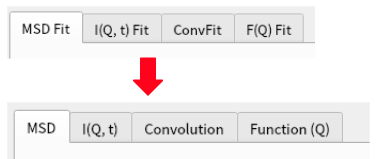

Inelastic Changes#
New Features#
Indirect/Inelastic interfaces have a new
Load Workspace Historyoption in the settings dialog.
{kind=link}

The Elwin Tab of Data Processor Interface now includes access to the Slice Viewer or 3D Plot from the output plot widget of the output workspaces containing more than 1 histogram.
{kind=link}

The Convolution tab of the Inelastic QENS Fitting Interface now has option
Tie Peak Centresto tie two Lorentzians in the interface.QENS Fitting Interface now allows loading a
_Resultworkspace from theI(Q, t)fitting tab into theFunction (Q)fitting tab if one of the fit parameters is A0.The
I(Q, t)tab in Inelastic QENS Fitting Interface has new optionOutput Composite Members.Renamed tabs of QENS Fitting from
MSD Fit,I(Q,t) Fit,ConvFitandF(Q)toMSD,I(Q,t),ConvolutionandFunction(Q)respectively. Added tooltip.
{kind=link}

The Container Subtraction tab of the Corrections interface has new option not to delete subtracted workspaces when adding new data.
Bugfixes#
Algorithm BayesQuasi no longer throws an
index out of rangeerror when using a sample with a numeric axis.The Elwin Tab of the Data Processor Interface no longer freezes when running the tab.
The Convolution of the QENS Fitting interface no longer crashes when attempting to fix all
IsoDiffRotparameters from theEditLocalParameterdialog.When the ADS is cleared of workspaces that are used to run fits on an open QENS Fitting interface, a warning message now pops up when clicking on the
Runbutton.Fixed a bug in the Monte Carlo error calculation on the I(Q, t) tab of the Data Processor Interface where the first bin had an error of zero.
The Elwin Tab of the Data Processor Interface now supports loading data unrestricted by suffix if the option is selected from
Settings.On Elwin interface, it is now possible to see the spectrum number 0 on the widget plot of the selected preview workspace. Changing the preview spectrum above the plot widget combo box now plots the correct spectrum for the selected index.
The Elwin interface now plots the correct spectrum for the selected index when changing the preview spectrum above the plot widget combo box.
The Moments tab of the Data Processor interface now have responsive sliders to changes in
EminandEMaxproperties when changed from the property browser.The Inelastic Bayes fitting interface now correctly calculates EISF errors on the Quasi tab.
Adding new data to the Elwin data table after clearing the Analysis Data Service no longer raises a
No data foundwarning.Plotting a preview of the selected workspace on the Elwin tab no longer crashes Mantid after that workspace has been deleted from the ADS.
Fix a cutoff issue with
Symmetric Energy Rangelabel in the Iqt tab of the Data Processor interface.The dialog window for adding data in the Elwin Tab of the Data Processor Interface no longer freezes when adding data.
Fixed a crash on the Quasi tab of the Inelastic Bayes Fitting interface caused by attempting to load a WorkspaceGroup rather than the expected Workspace2D.
Prevented a crash on the Quasi tab of the Inelastic Bayes Fitting interface caused by clicking
Runbefore data has finished loading.Available fit functions in the
Function (Q)tab of the QENS Fitting interface are now updated according to the type of data (EISF,A0orWidth) loaded in the table.Inelastic Bayes Fitting no longer crashes when closing the interface while it is loading data.